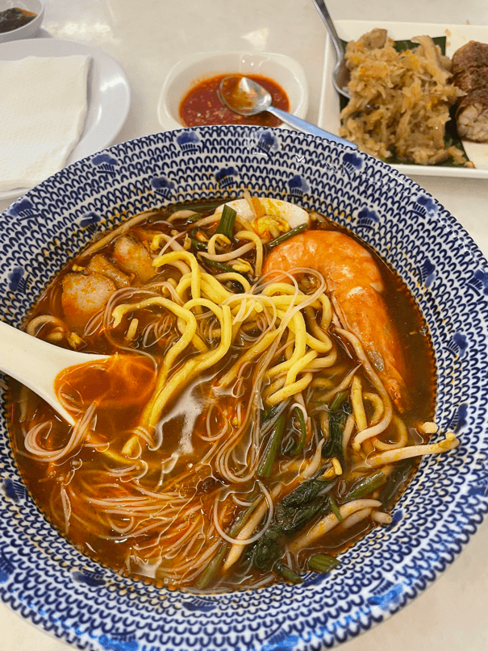

Prawn Mee
A popular Penang noodle soup made with a rich, spicy prawn-based broth, served with yellow noodles, prawns, egg, and bean sprouts.

“As a food lover, heading to Penang to savor the local food was a must for me. Hopping from street stall to street stall — as well as the occasional restaurant — I gave myself time to follow locals’ advice and sample as much variety as I could fit in my stomach.”
—Sarine Arslanian, Tastes Of Penang: The Culinary Capital Of Malaysia
A popular Penang noodle soup made with a rich, spicy prawn-based broth, served with yellow noodles, prawns, egg, and bean sprouts.
A famous Penang street food dish of flat rice noodles stir-fried over high heat with prawns, Chinese sausage, egg, bean sprouts, and chives in a savory, smoky sauce.
Nyonya kuih are traditional bite-sized desserts and snacks from the Peranakan, or Straits Chinese, community — descendants of early Chinese settlers who integrated local Malay customs. These kuih are known for their vibrant colors, soft chewy textures, and fragrant ingredients like coconut milk, pandan, and glutinous rice, often served during festive occasions and family gatherings.
A refreshing shaved ice dessert made with pandan-flavored green jelly noodles, coconut milk, palm sugar syrup, and sweetened red beans.